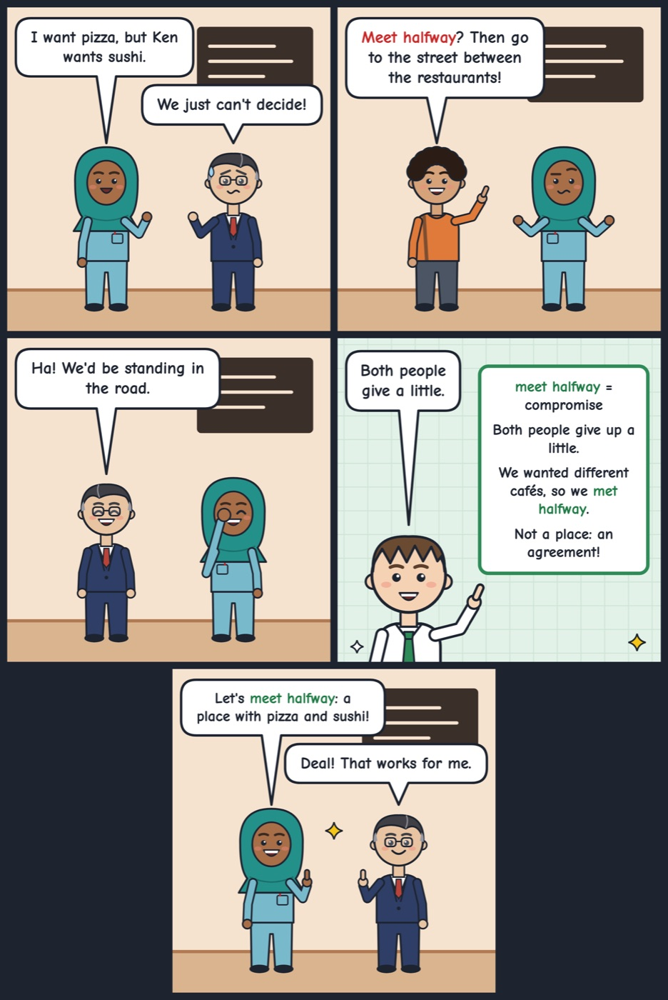

meet halfway
To reach a compromise where each side gives a little.
We wanted different restaurants, so we met halfway and chose a café.
'Meet someone halfway' means both people compromise.

Your turn
Tell us about a time you met someone halfway.
Tell us about a time you met someone halfway.